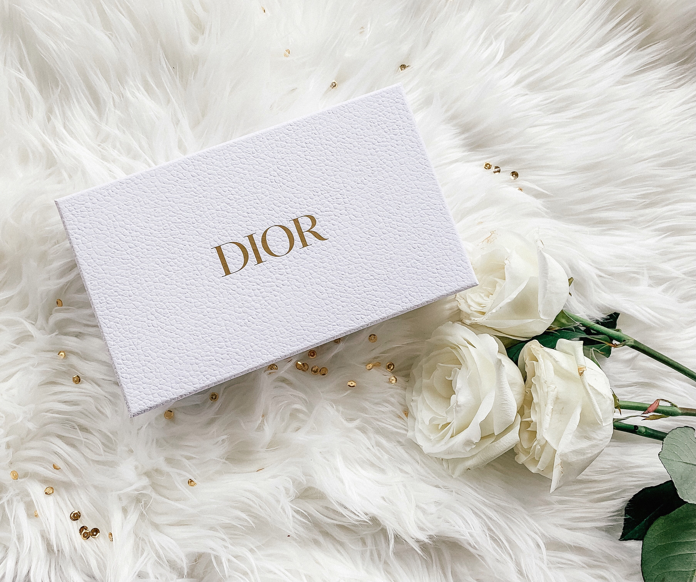

The company was founded in 1946 by designer Christian Dior. It currently designs and retails leather goods, fashion accessories, footwear, jewelry, timepieces, fragrance, makeup, and skin care products, while also maintaining its tradition as a creator of haute-couture under the Christian Dior Couture division.
Christian Dior SE, commonly known as Dior, is a French luxury goods company controlled and chaired by French businessman Bernard Arnault, who also heads LVMH, the world's largest luxury group. Dior itself holds 42.36% shares of and 59.01% voting rights within LVMH.Pietro Beccari has been the CEO since 2017. The company was founded in 1946 by designer Christian Dior.

It currently designs and retails leather goods, fashion accessories, footwear, jewelry, timepieces, fragrance, makeup, and skin care products, while also maintaining its tradition as a creator of haute-couture under the Christian Dior Couture division. The Christian Dior label remains largely for women's offerings, although the company also operates the Dior Homme division for men and the baby Dior label for children's wear. Products are sold throughout its portfolio of retail stores worldwide, as well as through its online store.